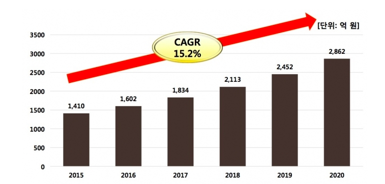

Open Source & Free Software
오픈소스 전망 (Open Source Perspectives)
오픈소스의 가치는 계속 상승하는 추세입니다. IDC 와 정보통신산업진흥원(NIPA)의 '오픈소스 SW 시장 및 트렌드' 조사에 따르면 2016년 기준 전 세계 오픈소스 SW시장 규모는 약 600억 달러 (한화 65 조 2천억원) 규모를 형성했습니다.
기업이나 공공기관이 오픈소스 소프트웨어를 활용하는 것은 이제 전세계적인 추세입니다. 오픈소스 SW시장은 국내에서도 점차 무르익고 있습니다. 특히 4차산업혁명시대 진입에 따른 핵심기술로 다양한 분야에서 활용도가 더 높아지고 있다는 분석입니다.
실제 NIPA 공개 SW 포털에 따르면, 국내 오픈소스 SW시장은 클라우드와 빅데이터, 사물인터넷(IoT), 인공지능 (AI)등 신산업 부문에서 활용이 늘면서 오는 2020년까지 연평균 15.2% 성장할 것으로 전망됩니다.
국내 오픈소스 SW시장은 2015년 1410억원, 2016년은 1602억원을 기록했고 2017년은 1834억원 규모로 전망됩니다. 이같은 추세라면 2년 후인 2020년에는 2862억원의 시장을 형성할 것으로 예상됩니다.
국내 전체 SW시장을 12~13조원으로 추정했을 때, 오픈소스SW 시장이 차지하는 비중은 미미합니다. 하지만 오픈소스 SW가 갖고있는 비용절감 효과가 최신기술 적용, 특벙 벤더 종속 완화등의 가치는 관련 시장 확대의 원동력이 되고 있습니다.
정부의 오픈소스 SW 활성화 지원 사업도 계속해서 늘어나고 있는 실정입니다. 올해 들어선 전통, 융합산업별 요소기술 개발, 개방형 os 환경개발 등의 사업등을 추진하면서 활용 수요가 높은 공통 요소기술 개발에 대한 지원을 추진하고 있습니다.
앞으로 오픈소스는 무궁무진하게 발전해 나아갈 것이고 국내에서도 정부의 지원과 더불어 활용 수요가 상승하면서 오픈소스 SW가 국내시장에서도 활성화 될 것으로 보여집니다.
이전으로